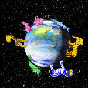

De: La Frikipedia, la enciclopedia extremadamente seria.
De: La Frikipedia, la enciclopedia extremadamente seria. De: La Frikipedia, la enciclopedia extremadamente seria.
| De la serie Países del planeta tierra: | |||||
| Golosilandia | |||||
|---|---|---|---|---|---|
| |||||
| Lema: Las golosinas dominaremos el mundo | |||||
| Himno: Golosinas levataos, pedid mundo y libertad, todos hacia delante, mirando hacia el frente, matad a todos los humanos y conseguiremos dominar el mundo!!
| |||||
| 
| |||||
| Capital | Bilbollicao | ||||
| Mayor ciudad | Villa huesitos | ||||
| Lenguas oficiales | Español con tacos | ||||
| Gobierno | Consejo de Sabios | ||||
| Rey | Kingder Sorpresa | ||||
| Área | Es casi un planeta entero debajo del subsuelo | ||||
| Población | No se sabe, porque los comechocobos y los gordos están continuamente comiéndose a las gentes de este país y no hay numero oficial | ||||
| Moneda | Moneda de chocolate | ||||
| Zona horaria | No hay hora específica en este país | ||||
| Dominio Internet | .golosgolos | ||||
| Código telefónico | Allí la mayoría de teléfonos son de los que están rellenos de caramelos
| ||||
| Allí la gente es muy "dulce" | |||||
Golosilandia es un país que esta debajo del subsuelo al que solo se puede llegar a través de la imaginación de un persona, un coma etílico o soñando. Aquí nacieron grandes personajes como el perro del Doowap o María Magdalena. En este país la religión oficial es el Golosianismo, aunque hay gente que practica el cristianismo (aunque muy poca, menos del 1%).
Su territorio, con capital en Bilbollicao (que es una ciudad que se parece mucho a Bilbao , pero en esa ciudad se come a todas horas bollicaos) ocupa todo el subsuelo a 9.345 metros por debajo del nivel del mar.
Tiene la extensión del planeta tierra, por eso es el país mas extenso del Universo, seguido por Rusia.No se sabe los habitantes que tiene, ya que allí no existen los censos, porque nadie se va a poner a censar ciudadanos cuando llega allí, porque según lo mencionado anteriormente solo se puede llegar a través de la imaginación de un persona, un coma etílico o soñando. Por ejemplo si te da un coma etílico y a un amigo tuyo también, os podréis encontrar en ese país.
Golo viene del chino, que significa golosina y landia que proviene del inglés y que significa país. Este término fue utilizado por primera vez por los 4 dioses del golosianismo, que crearon este país para alejar a las golosinas del mundo exterior, que era muy peligroso y necesitaban protegerlas.
Según el golosianismo, después de que crearan los humanos, los dioses golosos lo intentaron de nuevo y crearon dos seres semejantes a ellos, pero eran demasiado perfectos como que para que viviesen en la tierra, así que los envió al Jardín de la alegría, donde eran muy felices, pero a Kimgriezh se le olvidó decirle a los seres perfectos que no comiesen del árbol de las manzanas de caramelo, porque quien comiese de esas manzanas tendría el poder de dar las patadas giratorias de Chuck Norris y eso seria algo malo para los dioses del Golosianismo, porque sus seres perfectos se podrían revelar. A los pocos días comieron de la manzana de caramelo y los dos seres perfectos se sintieron desnudos. Huyeron de un lado para otro y se cuando se vieron desnudos se quedaron mirándose uno al otro y practicaron sexo entre ellos.
Cuando los vio Kimgriezh, decidió expulsarlo por estas tres razones:
Los seres perfectos fueron expulsados a la tierra donde sufrieron eternamente....bueno, hasta la edad antigua.
Años mas tarde, los seres perfectos se hicieron llamar golosinas, y fueron cazados por los humanos durante cientos de años por dos razones, la primera es porque eran seres perfectos superiores a los humanos y ellos tenían envidia de eso. La segunda razón fue por su sabor, porque para que engañarse, están buenísimas!!
Los dioses golosos al darse cuenta de ese habito que tenían los humanos, provocaron una inundación e intentaron extinguir a la raza humana sin éxito (En la Biblia es la famosa inundación del Arca de Noé). La inundación duró mucho tiempo y los dioses golosos intentaron salvar al mayor número de golosinas posibles. Las que fueron salvadas fueron llevadas al cielo, mientras que las que no fueron salvadas habitaron la tierra durante muchos años. Incluso todavía hay descendientes suyos por ahí y habitan en las tiendas a la espera de que alguien las compre para ser comidas brutalmente.
Los dioses pensaron ¿Que haremos con estas refugiadas?, pues a uno se le ocurrió que podrían hacer un mundo mejor para ellas y hicieron un gran agujero en el suelo, por el que colaron todas las golosinas y llegaron al Infierno.
Allí las golosinas no lo pasaron mejor, ni mucho menos. Eran maltratadas por los demonios, eran asesinadas, los demonios les robaban su comida, sus lámparas, sus películas porno, sus condones, etc. Un día los cuatro dioses golosos se hartaron e hicieron un trato con Bill Gates. Los cuatro dioses golosos les tenían que entregar a los demonios un millón de almas de humanos inocentes, un traje de spiderman, condones gratis de por vida y a su hijo Pepe (el mesías). A cambio, los demonios habitarían unos kilómetros por debajo que ellos. Los dioses aceptaron el trato y le dieron a los demonios el millón de almas de humanos inocentes (para ello inventaron la peste negra), el traje de spiderman (para ello viajaron al futuro, porque spiderman no existía en esa época) , los condones gratis de por vida y a su hijo Pepe (que casualmente ese era el día de su crucifixión.
Una vez que se fueron los demonios, las golosinas empezaron una de sus mejores épocas, la edad moderna. Lo primero que debían hacer era ocupar las casas de los demonios, derribar las que no resultaban necesarias y construir otras nuevas. Las mayoría las hicieron de chocolate, caramelo o galleta. Las mas lujosas fueron hechas de una mezcla de turrón, jalea real y M&M. Fue una buena época aunque no pasó nada más interesante la verdad…
Una mala época para Golosilandia, llena de guerras, hambres y enfermedades. Los Dioses intentaban luchar contra los males, pero los demonios que estaban cabreados lo único que hacían eran enviar males joder Golosilandia. Durante esos años murieron muchas golosinas y se extinguieron otras tantas, como las Papisniss (Chupa Chups con semen).
Tras años y años de angustia, los cuatro dioses golosos consiguieron llegar a un acuerdo con los demonios y pararon de enviar males a Golosilandia. A cambio los dioses golosos tenían que darle los derechos de autor de Naruto y la colección completa de tazos de Pokemon (en el infierno todos son unos frikis).
Desde entonces, las golosinas han vivido en armonía y felicidad hasta nuestros días, tienen una brillante civilización, son grandes matemáticos y buenos filósofos. Lo mas importante que les ha pasado a ellos este siglo ha sido la muerte del gusanillo del anuncio de los Donuts.
En este país manda el Rey, así de claro. El rey es ayudado por el consejo de sabios, que lo forman las golosinas mas ancianas. Los poderes de cada provincia se les concede a un presidente. Así, en cada ciudad manda el alcalde.
El Rey actual es su majestad, el Kingder Sorpresa. Su esposa, la reina Croissant solamente manda en el país cuando su esposo no esta en el país, sus hijos son: El príncipe Flan y la infanta Leche condensada. El presidente actual es cereales.
El consejo de ancianos actual está formado por cinco ancianos actualmente:
Los cinco sabios son gays y fuertemente seguidores del golosianismo. Tienen mas de 50 millones de películas bajadas del emule, aunque eso no le importa a nadie. Cada uno domina seis idiomas (español con tacos, español sin tacos, sms, jerga marginal, idioma cani e idioma del reggaeton).
Cada uno es miembro de varias academias pederastas de Europa y han asesinado entre todos a ocho cargos honoríficos de diferentes universidades (entre otras, al decano de la Universidad de Navarra), además la mayoría son ciudadanos honoríficos de la comunidad de Pederastas Especializados Navegando por Enthernet (P.E.N.E.), Penes Súper hOrrorosamente Enanos (P.S.O.E.), Muy Amariconados Raramente Inteligentes Con Oscuros Narcotraficantes (M.A.R.I.C.O.N.).
La principal defensa de Golosilandia son los dioses golosos, que continuamente los están defendiendo de los demonios. No suelen tener guerras con el mundo exterior, solo tuvieron una vez una guerra con España, pero los cuatro dioses golosos enviaron a Aznar que estuvo jodiendo a España durante muchos años.
Por si acaso Golosilandia perdiese alguna guerra y no estuviesen bien defendidos, tienen un botón que al ser pulsado puede destruir el mundo (Jódete Bill Gates).
Golosilandia se organiza en 50 provincias enormes. Estas son las provincias:
|
|
|
En Golosilandia de por sí hace mucho calor, porque están en el antiguo infierno. Lo que pasa es que los dioses golosos cambiaron el clima haciendo diversos pactos con Bill Gates. Por eso, la temperatura media del año es de 12º. No hay precipitaciones en forma de agua, pero si en forma de donuts y en forma de snack de matutano. Hay abundante hierva hecha de papel dulce .
La moneda oficial es la moneda de Chocolate, aunque también se comercializa con todo tipo de golosinas y niños para violar. Golosilandia tiene una gran cantidad de bancos y casi todos son tan ladrones como los bancos españoles, por eso casi nadie mete sus monedas de chocolate en el banco. Por lo menos, las golosinas no pagan hacienda, porque gracias a los dioses golosos, que les dan a los demonios camisetas de Dragon Ball, no hay porque pagarla la hacienda, porque como todo el mundo sabe, el cobro de hacienda es un invento del Diablo para crear morosos para enviarlos al infierno.
En golosilandia hay millones de tipos de golosinas distintas, entre ellas: Huevos, melones, chicles, palotes, kit kats, gusanitos, lenguas, pica pica, rompedientes, corazones, chupa chups, moras, botes de cola, monedas rojas y demás peña que vive por aquí. La mayoría son homosexuales y se reproducen por esporas, les gusta la paz y odian a los humanos.
Estos seres son descendientes de demonios que quedaron por este país. Otros fueron enviados aquí desde el infierno para que espiasen cuanto fuese posible. Son extremadamente violentos y les gusta asesinar a golosinas inocentes. Se les reconoce por que suelen llevar camisetas de manga o animes japoneses . Esto de abajo sirve para reconocerlos:
Típicas golosinas drogadas que aparecen en cualquier esquina con ganas de que les des dinero “pa´ comprarse comida”. No son peligrosas, pero si te los encuentras, será mejor que huyas, porque no pararán hasta que no les des dinero.
Los humanos llegan a este país a través de la imaginación de un persona, un coma etílico o soñando. Cuando llegan, si es su primera vez, son maltratados por diversas golosinas. La segunda vez suelen estar muy solos y marginados hasta que consiguen tener amigos (como mínimo tras venir 8 o 9 veces).
Los hombres topo viven 34 kilómetros por encima de Golosilandia. Algunos emigraron a Golosilandia en busca de un futuro lleno de Golosinas, pero al llegar a Golosilandia son maltratados por tener las paletas tan grandes. 1 de cada 100 habitantes es un hombre topo.
Hay algunos famosos de este país que son internacionalmente famosos e incluso trabajan para la publicidad, poniéndose en ridículo por dos céntimos de Doowap, que estaba constantemente violando monjas y tuvo que ser desterrado al mundo exterior. Algunos famosos nacidos en este país son:
Autor(es):